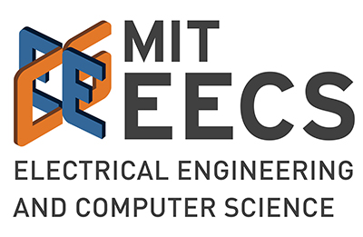

Xin Wen
Hi I am an undergrad at MIT majoring in Electrical Engineering and Computer Science, and minoring in Design. I am interested in the intersection of engineering and design. For me, these two disciplines are about envisioning the future of interactions and turning these visions into reality.
I am curently working at MIT CSAIL HCI Engineering Group under Professor Stefanie Mueller, on the intersection between Human-Computer Interaction and Personal Fabrication.
You can learn more about my experience by emailing me at xinwen /at/ mit.edu.